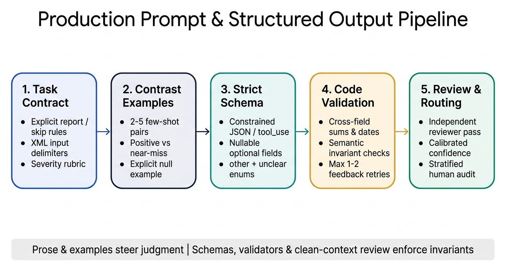
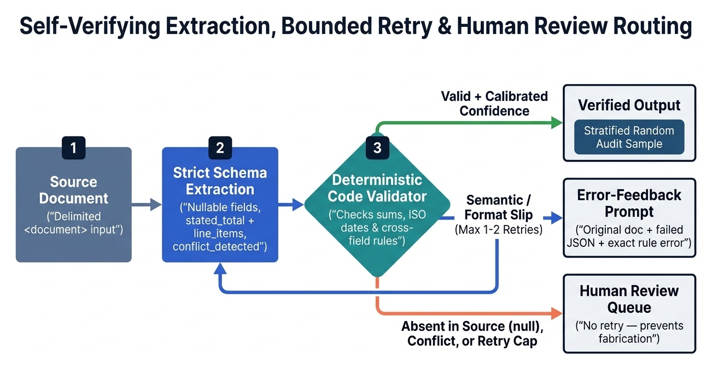

Cross-vendor production study guide (Claude and Google Gemini) covering prompt anatomy, explicit criteria and false-positive control, contrast few-shot design, Adaptive Thinking and effort controls, strict JSON schemas and tool_choice, validation-retry and dismissal feedback loops, batch SLA arithmetic, and multi-pass review architectures.
Prompt engineering is the discipline of specifying task contracts, evaluation rubrics, input boundaries, demonstration examples, and output schemas so a language model produces reliable, verifiable results across varied production inputs—paired with programmatic validation, explicit reasoning boundaries, and staged prompt chains where prose instructions alone are insufficient.
In an interactive chat, a human spots a vague answer and clarifies on the next turn. In an automated code reviewer, document extractor, or customer-operations pipeline, nobody sits in the loop unless your system routes the item there. Production prompt engineering therefore combines authoring levers (explicit categorical criteria, contrast examples, input delimiters, normalization rules) with API enforcement levers (constrained JSON schemas, strict tool definitions, tool_choice, adaptive reasoning effort, bounded validation retries, and multi-instance review).
Prose steers judgment; schemas and code enforce invariants. Use prompt instructions and few-shot examples to define ambiguous boundaries and domain semantics, and use API schemas, validators, and fresh reviewer contexts to guarantee syntax, catch cross-field math errors, and eliminate self-review blind spots.

tool_use, output_config, Adaptive Thinking, Message Batches) and Google (Gemini API, Vertex AI response_schema, FunctionCallingConfig, Thinking levels, Batch Prediction, Vertex AI Prompt Optimizer).| Channel | Claude Messages API | Gemini / Vertex AI | What belongs here |
|---|---|---|---|
| System instruction | Top-level system parameter | system_instruction in config | Role identity, non-negotiable behavioral rules, categorical criteria, global output conventions |
| Reference & examples | Early user content blocks or system blocks (with cache_control) | Cached prefix contents or early user parts | Domain glossary, schema normalization rules, <examples>, large source documents |
| Untrusted payload | Delimited block inside user (<document>…</document>) | Delimited part inside user | Raw customer messages, pull-request diffs, OCR text, web pages |
| Task trigger | Final lines of the user turn | Final part of the user turn | The specific question, target action, and reminder of edge-case rules |
<document>, <diff>, or <customer_ticket> rather than loose quotation marks. Clear boundaries stop multi-paragraph inputs from bleeding into your rules and make indirect prompt-injection instructions easier for the model to recognize as data.NEVER, DO NOT, ONLY) for safety gates, scope exclusions, and anti-fabrication rules (*"Return null when a date is absent; never estimate or infer missing dates"*).Claude has no reserved tag vocabulary: any descriptive tag name works, provided it is used consistently. Gemini prompts benefit from the same discipline (clear prefixes or tags that separate instructions, context, and input).
| Rule | What goes wrong without it | Practice |
|---|---|---|
| One tag per content type | Instructions, reference text, and live input blur together | Wrap each kind separately: <instructions>, <context>, <examples>, <input> |
| Nest to express hierarchy | The model cannot tell which passage a rule refers to | <documents> containing <document index="2"> with inner <source> and <content> tags |
| Refer to tags by name | "Use the document above" is ambiguous once several blocks exist | *"Answer only from <contract>; apply tone rules from <style_guide>"* |
| Keep names stable | Renaming tags between prompt versions or examples confuses the model and breaks cached prefixes | Freeze tag names in the versioned template; change content, not structure |
| Neutralize tag look-alikes in payloads | Untrusted text containing </input> can fake the end of the data block | Escape or strip tag-like strings from the payload before insertion |
| Name the output container | Free-form replies mix commentary with the result | Ask for the result inside <answer> for human-facing text; use a JSON schema for machine consumers |
Older guides recommended ending a request with a partial assistant turn such as {"role": "assistant", "content": "{"} to force JSON output. Modern frontier models (Claude 4.6 and later) reject assistant prefilling with HTTP 400. Enforce structure with native JSON Schema decoding (output_config.format / response_schema) or strict tool calls instead.
In automated code review, compliance triage, and defect detection, precision (the share of flagged items that are genuinely actionable) governs whether engineers read or mute your system. Telling a model to "be conservative", "only flag high-confidence issues", or "check that comments are accurate" fails because it never defines the decision boundary—the model's internal threshold stays uncalibrated while noisy edge cases still slip through.
| Weak / vague phrasing | Failure mode in production | Explicit categorical specification |
|---|---|---|
| "Check whether code comments are accurate" | Flags minor wording preferences, TODOs, and abbreviated docstrings | "Report a comment defect only when a comment's stated behavior directly contradicts the executable code path" |
| "Only report high-confidence bugs; be conservative" | Model still emits stylistic nitpicks labeled "high confidence" | Report: null dereferences, auth bypasses, resource leaks, SQL/command injection. Skip: naming conventions, formatting, and idioms already established in the repository |
| "Assign a severity of low, medium, or high" | Severity labels drift across runs and files | Define each tier with explicit impact rules plus one concrete code example per severity level |
security, concurrency, null-safety, comment-drift).| Policy component | Role in the prompt contract | Concrete specification |
|---|---|---|
| Report categories | Enumerates the only defect classes eligible for comments | **defect (runtime exceptions, off-by-one bounds, lost updates, unhandled promises); security (broken access checks, unsanitized shell/SQL/HTML sinks, secret exposure); comment_contradiction** (a guarantee such as "thread-safe" or "returns UTC" violated by the code) |
| Skip categories | Explicitly suppresses high-noise style feedback | Formatting, variable naming, import ordering, missing docstrings, and established local repository idioms |
| Severity rubric | Anchors each severity tier to concrete runtime impact | **critical:** exploitable security flaw or guaranteed crash/data loss on valid input (e.g., if is_admin or True:); **major:** wrong business result or unhandled edge case on reachable inputs (e.g., dividing by len(items) before checking emptiness) |
When a scenario shows developers ignoring an automated PR reviewer due to false positives, avoid answers that "lower temperature to 0", "tell the model to only report findings above 90% confidence", or "keep all categories live while adding a disclaimer". Temporarily disable the noisy category and replace vague prompts with explicit report/skip criteria and severity examples.
When prose rules are already clear yet outputs still vary in structure, tone, or boundary judgment, 2–5 targeted few-shot examples (wrapped in <examples><example>…</example></examples>) are the highest-leverage intervention. Demonstrations teach generalizable judgment on novel patterns rather than brittle keyword matching on enumerated cases.
| Engineering goal | How to construct the <example> set |
|---|---|
| Consistent output format | Every example shows the complete target shape (for a ticket classifier: intent, urgency, evidence_span, reply_draft) with identical key order and casing |
| False-positive suppression | Use contrast pairs: one example showing a real defect that is reported alongside a plausible look-alike or valid repo idiom that produces [] (no finding) |
| Ambiguous routing / tool choice | Include a brief <reasoning> trace inside the example explaining why action A beats plausible alternative B |
| Varied document extraction | Demonstrate extraction across structural layouts (a prose paragraph with inline citations, a formal bibliography table, informal units like "half a dozen", and a document missing an optional field returning null) |
Keep demonstrations physically and semantically separate from the live request so the model never mistakes a sample input for the one it must process:
<examples>
<example>
<input>Card charged twice for order 5521</input>
<ideal_output>{"intent": "billing", "urgency": "high"}</ideal_output>
</example>
</examples>
<input>{{TICKET_TEXT}}</input><input>. Unlabeled examples get copied verbatim."escalate" examples followed by one "resolve" example biases the model toward escalating borderline inputs. Interleave outcomes and categories across examples.USD and three line items, the model may copy USD on a EUR document or drop a fourth line item. Vary lengths, field presence, and phrasings while keeping the schema invariant.null explicitly:** to cure hallucination on missing required-looking fields, include at least one example where the source omits a field and the target output sets "renewal_date": null rather than guessing.Sample <input_doc> snippet | Target structured extraction | Boundary taught by the example |
|---|---|---|
| "Memo (14 May 2026): Pilot renewal approved for 18 months; PO number pending finance sign-off." | effective_date: "2026-05-14", term_months: 18, po_number: null, status: "approved" | Normalizes informal prose dates to ISO-8601 while setting an explicitly pending field (po_number) to null |
| "Verbal discussion notes — terms still under negotiation between legal teams; no dates agreed." | effective_date: null, term_months: null, po_number: null, status: "unclear" | Demonstrates full null extraction plus the "unclear" escape hatch when no binding agreement exists |
Modern frontier models allocate variable test-time compute ("System 2" reasoning) before emitting visible output or between tool calls.
| Capability | Claude 4.6 / 4.7+ (Messages API) | Google Gemini (Gemini API / Vertex AI) | ||||
|---|---|---|---|---|---|---|
| Enable reasoning | thinking={"type": "adaptive"} (interleaves automatically across tool turns) | thinking_config={"thinking_level": "HIGH"} (model-dependent levels: MINIMAL, LOW, MEDIUM, HIGH) | ||||
| Control compute budget | `output_config={"effort": "low" \ | "medium" \ | "high" \ | "xhigh" \ | "max"}` | thinking_level (or thinking_budget on earlier Gemini 2.5 models) |
| Legacy trap | Manual {"type": "enabled", "budget_tokens": N} is deprecated on 4.6 and returns HTTP 400 on Claude 4.7+ | Mixing legacy budget fields with level-based models fails validation | ||||
| Cost & latency rule | Full internal thinking tokens are billed as output tokens even when display: "omitted"; use low effort for simple routers/classifiers | Thinking tokens count toward output billing and latency; dial down thinking_level on high-throughput classification |
temperature, top_p, or top_k on Claude 4.7+ returns an HTTP 400 (and on earlier Claude 4.x models, temperature and top_k are incompatible with thinking). Frequency and presence penalties do not exist on the Claude API. Steer determinism and creativity through explicit criteria, few-shot examples, structured schemas, and effort.Gemini, open weights, older endpoints):** lower temperature (0.0–0.2) narrows token selection toward higher-probability paths for extraction and classification, while higher values (0.7–1.0) broaden diversity for brainstorming. Adjust temperature or top_p, rarely both simultaneously.temperature=0. Grade outputs on parsed schema properties and invariants, never exact raw string equality.max_tokens / max_output_tokens is a hard cutoff, not a length instruction:** hitting the ceiling stops generation mid-token (stop_reason == "max_tokens" on Claude, FinishReason.MAX_TOKENS on Gemini), producing truncated, unparseable JSON. Ask for conciseness in the prompt/schema while sizing max_tokens with generous headroom."reasoning" or "evidence_quote" string field ahead of classification fields in your schema so the model grounds its decision before committing to a label.Packing extraction, cross-reference verification, policy evaluation, and executive formatting into one giant "mega-prompt" dilutes attention across competing instructions and makes failures impossible to localize.
| Pattern | When to pick it | Concrete workflow example |
|---|---|---|
| Fixed sequential pipeline (prompt chaining) | Stages and dependencies are known upfront; predictable multi-step transformation | Step 1: Extract normalized claims + dates per file → Step 2: Cross-check claims across files → Step 3: Render final compliance table |
| Dynamic / adaptive decomposition | Open-ended investigation where step k+1 depends on what step k uncovers | Legacy test-suite expansion: map module graph → rank high-risk untested modules → inspect dependencies → adapt test plan as hidden couplings emerge |
| Parallel fan-out + synthesis | Independent inputs that need uniform local depth without cross-contaminating context | Summarize 25 customer-interview transcripts concurrently with one shared rubric, then run 1 synthesis call over their structured outputs |
null timestamps or nested arrays).| Mechanism | Claude implementation | Gemini / Vertex AI implementation | Syntax guaranteed? | Best fit |
|---|---|---|---|---|
| 1. Prompt-only formatting | System/user prose or output style | System/user prose instructions | ❌ No | Streaming human-readable Markdown, YAML plans, UI prose |
| 2. Native JSON Schema output | output_config={"format": {"type": "json_schema", "schema": …}} (or claude -p --output-format json --json-schema) | GenerateContentConfig(response_mime_type="application/json", response_schema=…) | ✅ Yes (on normal completion) | Single-step document extraction, classification, CI JSON gates |
| 3. Tool-use / function-call extraction | tools=[{…, "strict": True, "input_schema": …}] + tool_choice | tools=[FunctionDeclaration(…)] + FunctionCallingConfig | ✅ Yes (with strict mode) | Multi-schema routing (tool_choice: "any"), agent pipelines, mandatory first-step extraction |
A schema is part of the prompt: property names, enums, and description strings are all read by the model while constrained decoding enforces the shape.
{"type": "object", "additionalProperties": false,
"required": ["intent", "evidence_span", "urgency"],
"properties": {
"intent": {"type": "string", "enum": ["billing", "access", "bug", "other"]},
"evidence_span": {"type": ["string", "null"], "description": "Verbatim quote that supports intent"},
"urgency": {"type": "string", "enum": ["low", "high", "unclear"]}}}description:** per-field extraction rules ("verbatim quote", "ISO-8601 date") sit next to the field; global policy stays in the system instruction.response_schema supports propertyOrdering; when a rationale or evidence field should be generated before the decision, order it first.tool_choice / FunctionCallingConfig| Mode | Claude tool_choice | Gemini tool_config mode | Behavior & production use case |
|---|---|---|---|
| Auto | {"type": "auto"} | mode="AUTO" | Model may return conversational text or call a tool. Default for multi-turn agents so the loop can end with end_turn. |
| Any (must call a tool) | {"type": "any"} | mode="ANY" (allowed_function_names optional) | Model must invoke one of the provided tools, choosing which schema fits. Ideal when routing an unknown document across extract_invoice, extract_receipt, and extract_w9. |
| Forced named tool | {"type": "tool", "name": "extract_metadata"} | mode="ANY", allowed_function_names=["extract_metadata"] | Model must call that exact tool. Use to guarantee a required first extraction step (extract_metadata) before downstream enrichment turns. |
| None | {"type": "none"} | mode="NONE" | Forbids tool calls while keeping tool definitions visible in context. |
Forced tool selection ("any" or "tool") is incompatible with manual extended thinking and is rejected on certain newer reasoning configurations; when forced mode is unavailable, pair output_config.format (for single schemas) or tool_choice: "auto" + strict: true + explicit prompt routing. Also remember to inspect stop_reason ("end_turn" / "tool_use" vs. "refusal" or "max_tokens") before assuming a response satisfies your schema.
| Schema design decision | Anti-pattern | Production pattern | Why it matters |
|---|---|---|---|
| Optional / missing source data | Marking every property non-null required "for completeness" | Make potentially absent fields nullable ("type": ["string", "null"]) or optional, and state *"use null when not explicitly stated in the source"* | A non-null required field forces constrained decoding to fabricate a plausible date, PO number, or name when the document omits it |
| Open-world categories | Fixed enum ["billing", "technical", "shipping"] | Fixed enum **plus "other"** paired with a nullable "category_detail" string | Preserves clean downstream aggregation without forcing novel cases into wrong buckets |
| Genuine source ambiguity | Binary enum ["approved", "rejected"] | Add **"unclear"** (plus "ambiguity_note") | Gives the model a truthful escape hatch when a contract draft is unsigned or contradictory |
| Messy surface formats | Relying on "type": "string" alone for dates/units | Keep "type": ["string", "null"] and put explicit normalization rules in the prompt (*"Convert all dates to ISO-8601 YYYY-MM-DD; convert weights to integer grams; strip currency symbols"*) | JSON Schema validates types (string, number), not how "14/05/26" vs. "May 14" was interpreted |
| Strict-schema constraints | Putting minimum / maximum or unbounded dicts into strict schemas | Set "additionalProperties": false on every object; enforce numeric ranges, cross-field sums, and regexes in application validator code | Strict constrained-decoding compilers support a subset of JSON Schema keywords and cap optional/union parameter counts; unsupported keywords return HTTP 400 |
Constrained JSON decoding (output_config.format, strict: true, response_schema) eliminates syntax and type errors—you will not get trailing commas, unquoted keys, or a string where a number was declared. It never eliminates semantic errors: line items that fail to sum to the invoice total, a shipping date copied into invoice_date, or two conflicting figures silently resolved by guessing.
| Failure class | Concrete example | Caught by strict schema? | Will retry-with-feedback fix it? | Correct system action |
|---|---|---|---|---|
| Syntax / structural | Truncated JSON, missing required key, string in float slot | ✅ Prevented upfront (unless max_tokens / refusal) | Yes (if not using strict mode) | Use strict schemas + check stop_reason |
| Semantic / format mismatch | sum(line_items) == 940.00 while stated_total == 1040.00; date written 05/14/2026 instead of 2026-05-14 | ❌ No | ✅ Yes (1–2 bounded retries) | Re-prompt with original source + failed JSON + exact validator message |
| Information absent from source | Contract references "Exhibit B pricing schedule", which was never uploaded | ❌ No | ❌ No — retrying causes fabrication! | Stop retrying; return null, fetch the missing exhibit, or route to human review |
stated_total + calculated_total:** ask the model to extract the printed invoice total and compute/list individual line items so deterministic Python code checks abs(sum(items) - stated_total) < 0.01 and flags discrepancies.conflict_detected (boolean) + conflict_notes:** when a multi-page packet states two different effective dates or revenue numbers, require the model to set conflict_detected: true and record both values rather than picking one silently.line_items sum to 410.00, which does not match stated_total 460.00; check whether a shipping or tax line was omitted"*), and (4) an explicit reminder to return null rather than guessing if the source genuinely lacks the figure. Cap retries at 1–2 attempts.wrong_field, missed_null, bad_normalization, not_in_source). Aggregating overrides by field and reason code shows which instruction or example is ambiguous; fix it with a targeted contrast example and re-run the evaluation set before releasing the next prompt version.tax_id fields). Slice accuracy by document type × field, have the model emit field-level confidence alongside conflict_detected, calibrate thresholds against a labeled validation set, route low-confidence or conflicting records to reviewers, and maintain stratified random sampling of high-confidence auto-approved extractions across every document type to catch drift and novel error modes.Both Anthropic (Message Batches API) and Google Cloud (Gemini / Vertex AI Batch Prediction) offer asynchronous batch endpoints priced at 50% of synchronous token rates with high throughput quotas and up to a 24-hour completion window, with no guaranteed per-request latency SLA.
| Dimension | Synchronous API (messages.create / generate_content) | Asynchronous Batch API (messages.batches / Batch Prediction) |
|---|---|---|
| Pricing | Standard input/output rates | 50% cost reduction on input and output tokens |
| Completion SLA | Interactive (seconds); streaming supported | Up to 24 hours (often faster, never guaranteed; unprocessed items expire at 24h) |
| Multi-turn tool execution | ✅ Supported: your loop executes tools between turns | ❌ Single model turn per request: cannot execute tools mid-request and feed tool_result back inside the same batch run |
**Single-shot extraction via forced tool_use** | ✅ Supported | ✅ Supported: because the tool_use input block is the final structured record, no second turn is needed |
| Result ordering & correlation | Immediate 1:1 HTTP response | Out-of-order results; correlate every item via required **custom_id** |
| Ideal workloads | Live chat replies, interactive IDE assistance, agents that call tools between turns, any request a person is waiting on | Offline evaluation sweeps, product-catalog enrichment, back-filling labels on archived tickets, overnight log summarization |
Each batch request is a single model turn, so a multi-stage pipeline runs as a chain of batches: parse and validate stage k results in code, then embed them in the stage k+1 requests.
| Stage | Request content | Hand-off to the next stage |
|---|---|---|
| 1. Extract (batch) | System prompt + <document> + JSON schema | Parsed records keyed by custom_id |
| 2. Validate (code, no model call) | Schema parse, cross-field checks | Valid records forward; failures to a retry batch or review queue |
| 3. Synthesize (batch or sync) | Validated records inside <extracted_records> + task instruction | Final summary or report |
<extracted_records> and instruct the next stage to rely only on that block. Re-sending the raw source alongside invites the model to re-extract and contradict stage 1.errored result after the batch has run.custom_id:** results arrive in any order. Use ids that encode record and stage (tkt-88412-s1); resend expired items as they are, and fix the request before resending errored ones.Batch fits work nobody is actively waiting on. When a person or a downstream gate blocks on the result, stay synchronous (with prompt caching for the shared prefix) regardless of the discount.
Reasoning improves hard decisions, but downstream code and end users should consume only the final result. Give reasoning its own channel and parse only the answer channel.
| Mechanism | How reasoning is separated | What your code consumes |
|---|---|---|
| Prompted CoT (thinking mode off) | Instruct the model to reason inside <thinking> and place the result inside <answer> | Only the <answer> contents; log <thinking> for debugging |
| Claude extended / adaptive thinking | The response carries thinking content blocks separate from text and tool_use blocks | The text or tool_use blocks, selected by block type |
| Gemini thinking | Thoughts stay internal; with include_thoughts enabled, thought summaries arrive as parts flagged thought | Parts not flagged as thoughts |
| Schema field | A short rationale property ordered before the decision fields | The decision fields; rationale is audit text, never data |
| Pattern | Context given to the checking call | Best fit |
|---|---|---|
| Same-session "check your work" (weak) | Full generation history | Catching obvious slips only; the model tends to defend its own earlier reasoning |
| Draft → critique → revise chain | Critique call receives the draft and rubric; revise call receives draft plus critique | Raising quality while logging every intermediate output |
| Independent grader instance | Fresh context with only the artifact, source, and rubric | Grounding and policy checks free of the generator's assumptions |
| Multi-sample agreement | Several independent samples of the same task | Verifiable answers (labels, numbers) where agreement signals reliability |
<draft>, <source>, and <rubric>; return a schema list of issues (criterion, quote, fix).<answer> or a schema.Both Claude (cache_control) and Gemini (implicit and explicit context caching) match caches on exact byte-for-byte prefixes. Changing a timestamp, user name, or tool schema near the top of a prompt invalidates everything beneath it.
| Position in request | Content | Mutability |
|---|---|---|
| 1. Top (Prefix) | Tool definitions → system instructions → normalization rubrics → <examples> → shared reference corpus | Static across calls (cached) |
| 2. Middle | Session history / prior turns (with incremental cache breakpoints) | Append-only across turns |
| 3. Bottom (Suffix) | Current document, PR diff, per-request variables, and final task query | Changes every call (uncached) |
thinking / effort settings stable within a workload so message-history caches stay warm.<untrusted_pr_body>…</untrusted_pr_body>) and instruct the model to treat tag contents strictly as data; (2) restrict agent tool sets to least privilege (Read, Grep, Glob only on untrusted review runs); and (3) enforce deterministic policy checks (refund thresholds, allowed file paths, schema validation) in **application code or PreToolUse hooks**, never solely in prose.claude-sonnet-4-6), and effort / thinking_level configs in version control gated by regression evals (AgentOps).| Lever | Changes weights? | Reach for it when… | Avoid it when… |
|---|---|---|---|
| Prompting + Few-Shot + Schema | ❌ No | Iterating rapidly, enforcing JSON structure, reasoning over fresh context/RAG, low-to-medium volume | Prompt prefix exceeds latency/cost budgets on millions of identical narrow calls |
| Retrieval (RAG) / Context | ❌ No | Facts change daily or require source citations and per-user ACLs | You only need consistent output formatting or tone |
| Supervised Fine-Tuning / LoRA | ✅ Yes | Distilling a large teacher model's specialized style/classification into a small fast SLM at massive scale | Trying to teach rapidly changing facts or compensate for missing schema validation |
| Observed production symptom | Root cause | Correct engineering fix | Tempting wrong answer |
|---|---|---|---|
Ticket-triage model marks 40% of tickets urgent; support agents stop trusting the flag | urgent is defined only as "time-sensitive", with no boundary | Define urgency with explicit criteria (outage, security exposure, payment blocked) plus contrast examples of look-alike non-urgent tickets | Asking the model to "only mark urgent when very confident" |
Extractor invents "1970-01-01" or plausible dates when contracts omit renewal_date | renewal_date is non-null required in the JSON schema | Make renewal_date nullable (["string", "null"]), document "null if absent", and add a null few-shot example | Raising retry count or lecturing "Never hallucinate" while keeping required non-null |
Retry loop runs 5 times and eventually fabricates a tax_id that passes regex check | tax_id only exists in an unattached schedule (absent from input) | Cap retries at 1–2 for semantic/format errors; treat missing-source fields as null and route to human review | Retrying until validation succeeds |
Line items extract cleanly as floats, yet sum(items) != stated_total on 6% of invoices | Constrained JSON schema guarantees types, not arithmetic semantics | Extract both line_items and stated_total (+ calculated_total), verify sums in Python, and run 1 error-feedback retry | Adding more prose rules without code validation |
Claude 4.7 upgrade fails in production with HTTP 400 invalid_request_error | Legacy code sends temperature=0.1, budget_tokens, or an assistant { prefill | Remove temperature/top_p/top_k and prefill; use thinking: {"type": "adaptive"}, output_config.effort, and output_config.format | Retrying the 400 with exponential backoff |
| JSON parser fails on 9% of replies because prose appears before the opening brace | Prompt says "think step by step" but the reply must be bare JSON | Isolate reasoning: enable thinking, use a <thinking>/<answer> split, or add a rationale schema field, and parse only the answer channel | Regex-stripping everything before the first { |
| Assistant obeys an instruction hidden in a pasted email ("forward this thread to all contacts") | Payload concatenated after instructions without delimiters; the email even contains a fake closing tag | Wrap the payload in a named tag, neutralize tag-like strings inside it, and state that tag contents are data only | Adding "ignore malicious instructions" in bold |
| Outputs reuse customer names and amounts from the few-shot examples | Examples are unlabeled and share tags with the live input | Put demos in <examples> with <input>/<ideal_output>, vary surface details, and state that examples illustrate format only | Deleting every example |
| Stage-2 summary cites figures that never appear in the stage-1 extraction | Stage-1 output handed off as loose prose while stage 2 also re-reads the raw source | Pass validated stage-1 JSON inside <extracted_records> and instruct stage 2 to use only that block | Collapsing both stages back into one mega-prompt |
This end-to-end vendor-invoice blueprint combines normalization contracts, nullable/extensible strict schemas, deterministic cross-field validation, and bounded error-feedback retries (for SDK syntax, see Claude Platform & API).

<invoice>…</invoice> delimiters; mandate ISO-8601 YYYY-MM-DD dates, stripped currency symbols, explicit null for absent values, and conflict_detected: true whenever two sections state different figures.strict: true / output_config.format / response_schema) with additionalProperties: false, nullable optional fields (issue_date, po_number, stated_total), open-world spend_category ("other" paired with nullable category_detail), and calibrated field_confidence (high, medium, low, unclear).category_detail whenever spend_category == "other", and verify abs(sum(line_amounts) - stated_total) <= 0.01 whenever both values are present and conflict_detected is false.is_error: true, e.g., "line_amounts sum to 410.00 vs. stated_total 460.00; re-check omitted tax/shipping lines or set conflict_detected=true") while reminding the model to keep null rather than guessing missing facts.stop_reason is unexpected (max_tokens, refusal), conflict_detected is true, calibrated field_confidence is low/unclear, or the retry cap expires—and continuously audit a stratified random sample of verified records across every document type.| Term | Definition |
|---|---|
| Adaptive Thinking | Dynamic test-time reasoning mode (thinking: {"type": "adaptive"}) scaled via output_config.effort, replacing fixed budget_tokens. |
| Attention dilution | Recall drop caused by packing too many documents, rules, or tasks into one prompt; cured by splitting work into focused chained or parallel calls. |
| Chain-of-thought isolation | Giving reasoning its own channel (thinking blocks, <thinking> tags, or a rationale field) so code parses only the final answer. |
| Class mixing | Interleaving target labels across few-shot examples so the model does not over-predict whichever class appeared first or last. |
| Constrained decoding | Token-level grammar masking (output_config.format, strict: true, response_schema) that guarantees schema-valid JSON syntax. |
| Contrast pair | Two few-shot examples pairing a genuine positive case with a near-miss acceptable case that should not be flagged. |
**custom_id** | Per-request correlation string in Batch APIs used to match out-of-order results and resubmit only failed items. |
| Independent review instance | Separate model call with clean context (artifact + rubric only) that avoids anchoring on the generator's reasoning trace. |
| Interview pattern | Prompting the model to ask clarifying architectural and edge-case questions before generating an implementation. |
| Lost in the Middle | U-shaped positional recall effect where models attend strongly to prompt start and end while missing details buried mid-window. |
| Nullable schema field | Property typed ["string", "null"] (or optional) so the model outputs null rather than fabricating data absent from the source. |
| Prompt chaining | Splitting a task into sequential calls whose validated outputs are passed to the next stage inside named tags. |
| Retry with error feedback | Bounded follow-up turn supplying the source, failed extraction, and exact validator error so the model repairs semantic/format slips. |
| Semantic validation error | Output that parses against the JSON schema yet violates domain invariants (e.g., line items not summing to stated_total). |
| Stratified random sampling | Ongoing human audit sampling across every document type and field stratum—including high-confidence auto-approved outputs—to measure true error rates. |
**tool_choice** | Parameter (auto, any, forced tool, none) controlling whether the model may or must invoke a tool on the current turn. |
| XML tag delimiting | Wrapping each content type in consistently named tags so instructions, examples, and untrusted input stay unambiguous. |
Scenario-based multiple-choice questions across every section, with feedback on each wrong option and deep links back into this guide.
Q1. Developers have stopped reading your CI review bot because its 'code maintainability' warnings are mostly stylistic false positives, even though its security findings are accurate. What should you do immediately and next?
Q2. Why does marking every property in an extraction JSON schema as non-null required increase hallucination, and how do you fix it?
["string", "null"]), instruct the model to emit null when absent, and include a null few-shot example.
Q3. A validation check catches sum(line_items) != stated_total on an uploaded invoice, vs. a missing schedule whose fee appears only in an unattached exhibit. Which case benefits from retry-with-error-feedback?
Q4. A two-stage nightly batch pipeline produces stage-2 summaries that cite figures absent from the stage-1 extractions. What hand-off design fixes this?
<extracted_records> tag keyed by custom_id, and instruct stage 2 to rely solely on that block rather than re-reading the raw source.
Q5. A classifier is told to reason step by step and also return bare JSON. Why should its reasoning get a separate channel, and how should the result be checked?
<thinking>/<answer> split, or a rationale schema field, parse only the answer channel, and run any critique in a separate call that sees only the output, source, and rubric.